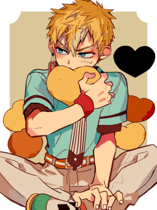
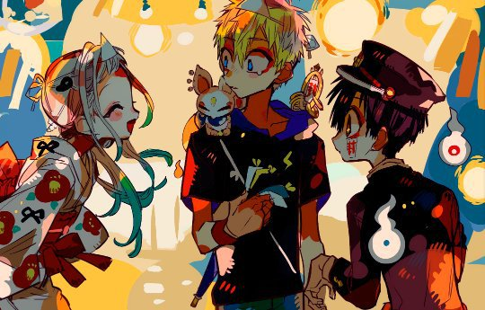
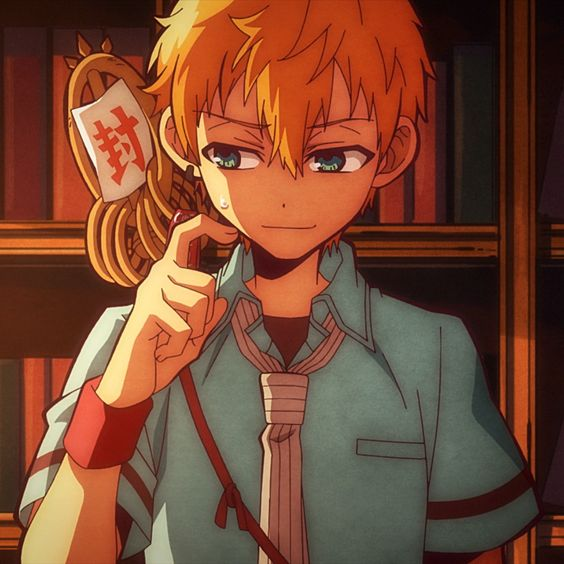

Minamoto Kou
Minamoto Kou (源 光) é um estudante da Divisão da Escola Secundária da Kamome Academy e membro de uma renomada família de exorcistas, o Clã Minamoto. Ele também tem dois irmãos sendo um mais velho chamado Teru, e uma irmã mais nova chamada Tiara.
Minamoto kou tem 15 anos usa uma lança chamada Raiteijou, uma arma transmitida pela família Minamoto que transforma o poder espiritual do portador em um raio que exorciza os sobrenaturais. Kou é um buscador de justiça, que está sempre de olho no Hanako para caso ele tente fazer algo contra a Yashiro, o garoto consiga protege-la a tempo.
Kou é um adolescente alto com cabelo loiro curto e espetado, olhos azuis claros.Sua personalidade e aura delinquentes o tornam relativamente impopular. Ele usa uma camisa preta por baixo do uniforme verde-azulado.Também usa uma gravata listrada creme e marrom que ocasionalmente fica desamarrada em volta do pescoço e uma faixa vermelha no pulso direito. Kou sempre é visto usando um brinco vermelho escrito trânsito.
Kou é gentil e alegre, tende a pular nas coisas de cabeça, sem pensar direito sobre elas. Muitas vezes ele é julgado erroneamente como um pouco delinquente ou rude, mas este não é o caso. Ele é precipitado e barulhento, mas ao mesmo tempo é muito gentil e atencioso. O garoto faz um esforço distinto para ser educado, tem uma quedinha pela Nene Yashiro, é muito leal aos seus amigos e os ajuda de todas as maneiras que pode, não importa o perigo.Se confunde facilmente e às vezes comete erros por se apressar demais.
